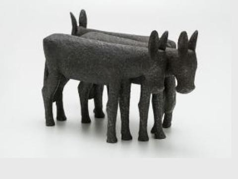
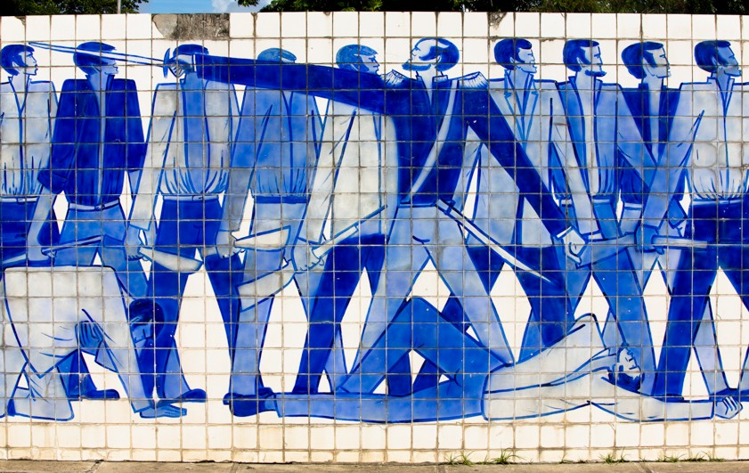
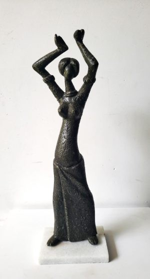

Corbiniano Lins
O modernismo pernambucano em alumínio, azulejo, barro e memória popular.
José Corbiniano Lins foi escultor, desenhista e pintor pernambucano, nascido em Olinda e ligado ao movimento de Arte Moderna do Recife. Em obra múltipla, aproximou alumínio fundido, azulejaria, barro, madeira, gravura e temas da cultura popular.
José Corbiniano Lins nasceu em Olinda, Pernambuco, em 1924. Ainda criança, costumava copiar desenhos, quadros e gravuras; depois estudou na Escola de Aprendizes Artífices de Pernambuco, atual Instituto Federal de Pernambuco (IFPE). Começou a pintar em 1949 e expôs pela primeira vez no ano seguinte.
Na década de 1950, integrou a geração do movimento de Arte Moderna do Recife. Em 1952, entrou no ateliê coletivo da Sociedade de Arte Moderna do Recife e participou da criação do Clube da Gravura, convivendo com artistas como Abelardo da Hora, Reynaldo Fonseca, Celina Lima Verde e Gilvan Samico.
Sua produção atravessou pintura, desenho, gravura, talha, azulejaria e escultura. A partir dos anos 1960, passou a trabalhar com isopor, metal e alumínio fundido; segundo registro jornalístico, usava até uma faca comum para confeccionar esculturas. A obra também dialoga com figuras femininas, religiosidade, cenas populares e memória histórica de Pernambuco.
Corbiniano deixou trabalhos em espaços públicos e acervos no Brasil e no exterior. Entre suas referências estão o painel de azulejos das Revoluções Pernambucanas, no Recife, a Sereia do Mirante, em Maceió, e esculturas em capitais nordestinas. Morreu no Recife em 2018, aos 94 anos; seu centenário motivou novas exposições dedicadas ao seu legado.
Em Corbiniano, a matéria se transforma em festa, gesto e memória de Pernambuco.
Para observar na peça
- Figuras alongadas, gestos marcados e silhuetas elegantes
- Diálogo entre modernismo, cultura popular e temas religiosos
- Uso de materiais variados: alumínio, barro, madeira, azulejo e gravura
- Presença de obras públicas que contam a história de Pernambuco
Materiais e técnica
Galeria de peças e referências de estilo
Obras e peças públicas reunidas para reconhecer linguagem, materiais e técnica. As peças da exposição são vistas apenas ao vivo.



Fontes e créditos
- Enciclopédia Itaú Cultural — Corbiniano Lins https://enciclopedia.itaucultural.org.br/pessoas/2168-corbiniano-lins
- G1 Pernambuco — Artista plástico Corbiniano Lins morre aos 94 anos, no Recife https://g1.globo.com/pe/pernambuco/noticia/artista-plastico-corbiniano-lins-morre-aos-94-anos-no-recife.ghtml
- CAIXA Notícias — Exposição 100 anos de Corbiniano Lins – A Festa! https://caixanoticias.caixa.gov.br/Paginas/Not%C3%ADcias/2025/05-MAIO/CAIXA-Cultural-Sao-Paulo-apresenta-a-exposicao-100-anos-de-Corbiniano-Lins-%E2%80%93-A-Festa.aspx
- Recife Arte Pública — Revoluções Pernambucanas (1817, 1824, 1848), 1967 http://www.recifeartepublica.com.br/obras/obra/Revolues-Pernambucanas-1817-1824-1948-1967/30
- Rodrigues Galeria de Artes — Corbiniano (PE) https://rodriguesgaleria.com.br/categoria/artistas/corbiniano/
- Anuário Pernambucano de Arte 2014 — Corbiniano https://artemaior.com.br/anuario2014/artista/corbiniano.html